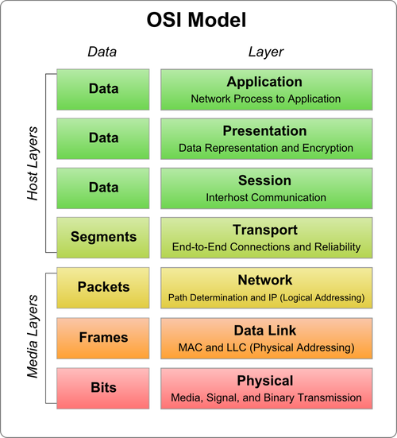

14.网络编程入门和网络应用开发
网络编程入门
计算机网络基础
计算机网络是独立自主的计算机互联而成的系统的总称，组建计算机网络最主要的目的是实现多台计算机之间的通信和资源共享。今天计算机网络中的设备和计算机网络的用户已经多得不可计数，而计算机网络也可以称得上是一个“复杂巨系统”，对于这样的系统，我们不可能用一两篇文章把它讲清楚，有兴趣的读者可以自行阅读Andrew S.Tanenbaum老师的经典之作《计算机网络》或Kurose和Ross老师合著的《计算机网络:自顶向下方法》来了解计算机网络的相关知识。
计算机网络发展史
- 1960s - 美国国防部ARPANET项目问世，奠定了分组交换网络的基础。

- 1980s - 国际标准化组织（ISO）发布OSI/RM，奠定了网络技术标准化的基础。

- 1990s - 英国人蒂姆·伯纳斯-李发明了图形化的浏览器，浏览器的简单易用性使得计算机网络迅速被普及。
在没有浏览器的年代，上网是这样的。

有了浏览器以后，上网是这样的。

TCP/IP模型
实现网络通信的基础是网络通信协议，这些协议通常是由互联网工程任务组 （IETF）制定的。所谓“协议”就是通信计算机双方必须共同遵从的一组约定，例如怎样建立连接、怎样互相识别等，网络协议的三要素是：语法、语义和时序。构成我们今天使用的Internet的基础的是TCP/IP协议族，所谓协议族就是一系列的协议及其构成的通信模型，我们通常也把这套东西称为TCP/IP模型。与国际标准化组织发布的OSI/RM这个七层模型不同，TCP/IP是一个四层模型，也就是说，该模型将我们使用的网络从逻辑上分解为四个层次，自底向上依次是：网络接口层、网络层、传输层和应用层，如下图所示。

IP通常被翻译为网际协议，它服务于网络层，主要实现了寻址和路由的功能。接入网络的每一台主机都需要有自己的IP地址，IP地址就是主机在计算机网络上的身份标识。当然由于IPv4地址的匮乏，我们平常在家里、办公室以及其他可以接入网络的公共区域上网时获得的IP地址并不是全球唯一的IP地址，而是一个局域网（LAN）中的内部IP地址，通过网络地址转换（NAT）服务我们也可以实现对网络的访问。计算机网络上有大量的被我们称为“路由器”的网络中继设备，它们会存储转发我们发送到网络上的数据分组，让从源头发出的数据最终能够找到传送到目的地通路，这项功能就是所谓的路由。
TCP全称传输控制协议，它是基于IP提供的寻址和路由服务而建立起来的负责实现端到端可靠传输的协议，之所以将TCP称为可靠的传输协议是因为TCP向调用者承诺了三件事情：
- 数据不传丢不传错（利用握手、校验和重传机制可以实现）。
- 流量控制（通过滑动窗口匹配数据发送者和接收者之间的传输速度）。
- 拥塞控制（通过RTT时间以及对滑动窗口的控制缓解网络拥堵）。
网络应用模式
- C/S模式和B/S模式。这里的C指的是Client（客户端），通常是一个需要安装到某个宿主操作系统上的应用程序；而B指的是Browser（浏览器），它几乎是所有图形化操作系统都默认安装了的一个应用软件；通过C或B都可以实现对S（服务器）的访问。关于二者的比较和讨论在网络上有一大堆的文章，在此我们就不再浪费笔墨了。
- 去中心化的网络应用模式。不管是B/S还是C/S都需要服务器的存在，服务器就是整个应用模式的中心，而去中心化的网络应用通常没有固定的服务器或者固定的客户端，所有应用的使用者既可以作为资源的提供者也可以作为资源的访问者。
基于HTTP协议的网络资源访问
HTTP（超文本传输协议）
HTTP是超文本传输协议（Hyper-Text Transfer Proctol）的简称，维基百科上对HTTP的解释是：超文本传输协议是一种用于分布式、协作式和超媒体信息系统的应用层协议，它是万维网数据通信的基础，设计HTTP最初的目的是为了提供一种发布和接收HTML页面的方法，通过HTTP或者HTTPS（超文本传输安全协议）请求的资源由URI（统一资源标识符）来标识。关于HTTP的更多内容，我们推荐阅读阮一峰老师的《HTTP 协议入门》，简单的说，通过HTTP我们可以获取网络上的（基于字符的）资源，开发中经常会用到的网络API（有的地方也称之为网络数据接口）就是基于HTTP来实现数据传输的。
JSON格式
JSON（JavaScript Object Notation）是一种轻量级的数据交换语言，该语言以易于让人阅读的文字（纯文本）为基础，用来传输由属性值或者序列性的值组成的数据对象。尽管JSON是最初只是Javascript中一种创建对象的字面量语法，但它在当下更是一种独立于语言的数据格式，很多编程语言都支持JSON格式数据的生成和解析，Python内置的json模块也提供了这方面的功能。由于JSON是纯文本，它和XML一样都适用于异构系统之间的数据交换，而相较于XML，JSON显得更加的轻便和优雅。下面是表达同样信息的XML和JSON，而JSON的优势是相当直观的。
XML的例子：
| XML |
|---|
| <?xml version="1.0" encoding="UTF-8"?>
<message>
<from>Alice</from>
<to>Bob</to>
<content>Will you marry me?</content>
</message>
|
JSON的例子：
| JSON |
|---|
| {
"from": "Alice",
"to": "Bob",
"content": "Will you marry me?"
}
|
requests库
requests是一个基于HTTP协议来使用网络的第三库，其官方网站有这样的一句介绍它的话：“Requests是唯一的一个非转基因的Python HTTP库，人类可以安全享用。”简单的说，使用requests库可以非常方便的使用HTTP，避免安全缺陷、冗余代码以及“重复发明轮子”（行业黑话，通常用在软件工程领域表示重新创造一个已有的或是早已被优化過的基本方法）。前面的文章中我们已经使用过这个库，下面我们还是通过requests来实现一个访问网络数据接口并从中获取美女图片下载链接然后下载美女图片到本地的例子程序，程序中使用了天行数据提供的网络API。
我们可以先通过pip安装requests及其依赖库。
如果使用PyCharm作为开发工具，可以直接在代码中书写import requests，然后通过代码修复功能来自动下载安装requests。
| Python |
|---|
| from time import time
from threading import Thread
import requests
# 继承Thread类创建自定义的线程类
class DownloadHanlder(Thread):
def __init__(self, url):
super().__init__()
self.url = url
def run(self):
filename = self.url[self.url.rfind('/') + 1:]
resp = requests.get(self.url)
with open('/Users/Hao/' + filename, 'wb') as f:
f.write(resp.content)
def main():
# 通过requests模块的get函数获取网络资源
# 下面的代码中使用了天行数据接口提供的网络API
# 要使用该数据接口需要在天行数据的网站上注册
# 然后用自己的Key替换掉下面代码的中APIKey即可
resp = requests.get(
'http://api.tianapi.com/meinv/?key=APIKey&num=10')
# 将服务器返回的JSON格式的数据解析为字典
data_model = resp.json()
for mm_dict in data_model['newslist']:
url = mm_dict['picUrl']
# 通过多线程的方式实现图片下载
DownloadHanlder(url).start()
if __name__ == '__main__':
main()
|
基于传输层协议的套接字编程
套接字这个词对很多不了解网络编程的人来说显得非常晦涩和陌生，其实说得通俗点，套接字就是一套用C语言写成的应用程序开发库，主要用于实现进程间通信和网络编程，在网络应用开发中被广泛使用。在Python中也可以基于套接字来使用传输层提供的传输服务，并基于此开发自己的网络应用。实际开发中使用的套接字可以分为三类：流套接字（TCP套接字）、数据报套接字和原始套接字。
TCP套接字
所谓TCP套接字就是使用TCP协议提供的传输服务来实现网络通信的编程接口。在Python中可以通过创建socket对象并指定type属性为SOCK_STREAM来使用TCP套接字。由于一台主机可能拥有多个IP地址，而且很有可能会配置多个不同的服务，所以作为服务器端的程序，需要在创建套接字对象后将其绑定到指定的IP地址和端口上。这里的端口并不是物理设备而是对IP地址的扩展，用于区分不同的服务，例如我们通常将HTTP服务跟80端口绑定，而MySQL数据库服务默认绑定在3306端口，这样当服务器收到用户请求时就可以根据端口号来确定到底用户请求的是HTTP服务器还是数据库服务器提供的服务。端口的取值范围是0~65535，而1024以下的端口我们通常称之为“著名端口”（留给像FTP、HTTP、SMTP等“著名服务”使用的端口，有的地方也称之为“周知端口”），自定义的服务通常不使用这些端口，除非自定义的是HTTP或FTP这样的著名服务。
下面的代码实现了一个提供时间日期的服务器。
| Python |
|---|
| from socket import socket, SOCK_STREAM, AF_INET
from datetime import datetime
def main():
# 1.创建套接字对象并指定使用哪种传输服务
# family=AF_INET - IPv4地址
# family=AF_INET6 - IPv6地址
# type=SOCK_STREAM - TCP套接字
# type=SOCK_DGRAM - UDP套接字
# type=SOCK_RAW - 原始套接字
server = socket(family=AF_INET, type=SOCK_STREAM)
# 2.绑定IP地址和端口(端口用于区分不同的服务)
# 同一时间在同一个端口上只能绑定一个服务否则报错
server.bind(('192.168.1.2', 6789))
# 3.开启监听 - 监听客户端连接到服务器
# 参数512可以理解为连接队列的大小
server.listen(512)
print('服务器启动开始监听...')
while True:
# 4.通过循环接收客户端的连接并作出相应的处理(提供服务)
# accept方法是一个阻塞方法如果没有客户端连接到服务器代码不会向下执行
# accept方法返回一个元组其中的第一个元素是客户端对象
# 第二个元素是连接到服务器的客户端的地址(由IP和端口两部分构成)
client, addr = server.accept()
print(str(addr) + '连接到了服务器.')
# 5.发送数据
client.send(str(datetime.now()).encode('utf-8'))
# 6.断开连接
client.close()
if __name__ == '__main__':
main()
|
运行服务器程序后我们可以通过Windows系统的telnet来访问该服务器，结果如下图所示。
当然我们也可以通过Python的程序来实现TCP客户端的功能，相较于实现服务器程序，实现客户端程序就简单多了，代码如下所示。
| Python |
|---|
| from socket import socket
def main():
# 1.创建套接字对象默认使用IPv4和TCP协议
client = socket()
# 2.连接到服务器(需要指定IP地址和端口)
client.connect(('192.168.1.2', 6789))
# 3.从服务器接收数据
print(client.recv(1024).decode('utf-8'))
client.close()
if __name__ == '__main__':
main()
|
需要注意的是，上面的服务器并没有使用多线程或者异步I/O的处理方式，这也就意味着当服务器与一个客户端处于通信状态时，其他的客户端只能排队等待。很显然，这样的服务器并不能满足我们的需求，我们需要的服务器是能够同时接纳和处理多个用户请求的。下面我们来设计一个使用多线程技术处理多个用户请求的服务器，该服务器会向连接到服务器的客户端发送一张图片。
服务器端代码：
| Python |
|---|
| from socket import socket, SOCK_STREAM, AF_INET
from base64 import b64encode
from json import dumps
from threading import Thread
def main():
# 自定义线程类
class FileTransferHandler(Thread):
def __init__(self, cclient):
super().__init__()
self.cclient = cclient
def run(self):
my_dict = {}
my_dict['filename'] = 'guido.jpg'
# JSON是纯文本不能携带二进制数据
# 所以图片的二进制数据要处理成base64编码
my_dict['filedata'] = data
# 通过dumps函数将字典处理成JSON字符串
json_str = dumps(my_dict)
# 发送JSON字符串
self.cclient.send(json_str.encode('utf-8'))
self.cclient.close()
# 1.创建套接字对象并指定使用哪种传输服务
server = socket()
# 2.绑定IP地址和端口(区分不同的服务)
server.bind(('192.168.1.2', 5566))
# 3.开启监听 - 监听客户端连接到服务器
server.listen(512)
print('服务器启动开始监听...')
with open('guido.jpg', 'rb') as f:
# 将二进制数据处理成base64再解码成字符串
data = b64encode(f.read()).decode('utf-8')
while True:
client, addr = server.accept()
# 启动一个线程来处理客户端的请求
FileTransferHandler(client).start()
if __name__ == '__main__':
main()
|
客户端代码：
| Python |
|---|
| from socket import socket
from json import loads
from base64 import b64decode
def main():
client = socket()
client.connect(('192.168.1.2', 5566))
# 定义一个保存二进制数据的对象
in_data = bytes()
# 由于不知道服务器发送的数据有多大每次接收1024字节
data = client.recv(1024)
while data:
# 将收到的数据拼接起来
in_data += data
data = client.recv(1024)
# 将收到的二进制数据解码成JSON字符串并转换成字典
# loads函数的作用就是将JSON字符串转成字典对象
my_dict = loads(in_data.decode('utf-8'))
filename = my_dict['filename']
filedata = my_dict['filedata'].encode('utf-8')
with open('/Users/Hao/' + filename, 'wb') as f:
# 将base64格式的数据解码成二进制数据并写入文件
f.write(b64decode(filedata))
print('图片已保存.')
if __name__ == '__main__':
main()
|
在这个案例中，我们使用了JSON作为数据传输的格式（通过JSON格式对传输的数据进行了序列化和反序列化的操作），但是JSON并不能携带二进制数据，因此对图片的二进制数据进行了Base64编码的处理。Base64是一种用64个字符表示所有二进制数据的编码方式，通过将二进制数据每6位一组的方式重新组织，刚好可以使用0~9的数字、大小写字母以及“+”和“/”总共64个字符表示从000000到111111的64种状态。维基百科上有关于Base64编码的详细讲解，不熟悉Base64的读者可以自行阅读。
说明： 上面的代码主要为了讲解网络编程的相关内容因此并没有对异常状况进行处理，请读者自行添加异常处理代码来增强程序的健壮性。
UDP套接字
传输层除了有可靠的传输协议TCP之外，还有一种非常轻便的传输协议叫做用户数据报协议，简称UDP。TCP和UDP都是提供端到端传输服务的协议，二者的差别就如同打电话和发短信的区别，后者不对传输的可靠性和可达性做出任何承诺从而避免了TCP中握手和重传的开销，所以在强调性能和而不是数据完整性的场景中（例如传输网络音视频数据），UDP可能是更好的选择。可能大家会注意到一个现象，就是在观看网络视频时，有时会出现卡顿，有时会出现花屏，这无非就是部分数据传丢或传错造成的。在Python中也可以使用UDP套接字来创建网络应用，对此我们不进行赘述，有兴趣的读者可以自行研究。
网络应用开发
发送电子邮件
在即时通信软件如此发达的今天，电子邮件仍然是互联网上使用最为广泛的应用之一，公司向应聘者发出录用通知、网站向用户发送一个激活账号的链接、银行向客户推广它们的理财产品等几乎都是通过电子邮件来完成的，而这些任务应该都是由程序自动完成的。
就像我们可以用HTTP（超文本传输协议）来访问一个网站一样，发送邮件要使用SMTP（简单邮件传输协议），SMTP也是一个建立在TCP（传输控制协议）提供的可靠数据传输服务的基础上的应用级协议，它规定了邮件的发送者如何跟发送邮件的服务器进行通信的细节，而Python中的smtplib模块将这些操作简化成了几个简单的函数。
下面的代码演示了如何在Python发送邮件。
| Python |
|---|
| from smtplib import SMTP
from email.header import Header
from email.mime.text import MIMEText
def main():
# 请自行修改下面的邮件发送者和接收者
sender = 'abcdefg@126.com'
receivers = ['uvwxyz@qq.com', 'uvwxyz@126.com']
message = MIMEText('用Python发送邮件的示例代码.', 'plain', 'utf-8')
message['From'] = Header('王大锤', 'utf-8')
message['To'] = Header('骆昊', 'utf-8')
message['Subject'] = Header('示例代码实验邮件', 'utf-8')
smtper = SMTP('smtp.126.com')
# 请自行修改下面的登录口令
smtper.login(sender, 'secretpass')
smtper.sendmail(sender, receivers, message.as_string())
print('邮件发送完成!')
if __name__ == '__main__':
main()
|
如果要发送带有附件的邮件，那么可以按照下面的方式进行操作。
| Python |
|---|
| from smtplib import SMTP
from email.header import Header
from email.mime.text import MIMEText
from email.mime.image import MIMEImage
from email.mime.multipart import MIMEMultipart
import urllib
def main():
# 创建一个带附件的邮件消息对象
message = MIMEMultipart()
# 创建文本内容
text_content = MIMEText('附件中有本月数据请查收', 'plain', 'utf-8')
message['Subject'] = Header('本月数据', 'utf-8')
# 将文本内容添加到邮件消息对象中
message.attach(text_content)
# 读取文件并将文件作为附件添加到邮件消息对象中
with open('/Users/Hao/Desktop/hello.txt', 'rb') as f:
txt = MIMEText(f.read(), 'base64', 'utf-8')
txt['Content-Type'] = 'text/plain'
txt['Content-Disposition'] = 'attachment; filename=hello.txt'
message.attach(txt)
# 读取文件并将文件作为附件添加到邮件消息对象中
with open('/Users/Hao/Desktop/汇总数据.xlsx', 'rb') as f:
xls = MIMEText(f.read(), 'base64', 'utf-8')
xls['Content-Type'] = 'application/vnd.ms-excel'
xls['Content-Disposition'] = 'attachment; filename=month-data.xlsx'
message.attach(xls)
# 创建SMTP对象
smtper = SMTP('smtp.126.com')
# 开启安全连接
# smtper.starttls()
sender = 'abcdefg@126.com'
receivers = ['uvwxyz@qq.com']
# 登录到SMTP服务器
# 请注意此处不是使用密码而是邮件客户端授权码进行登录
# 对此有疑问的读者可以联系自己使用的邮件服务器客服
smtper.login(sender, 'secretpass')
# 发送邮件
smtper.sendmail(sender, receivers, message.as_string())
# 与邮件服务器断开连接
smtper.quit()
print('发送完成!')
if __name__ == '__main__':
main()
|
发送短信
发送短信也是项目中常见的功能，网站的注册码、验证码、营销信息基本上都是通过短信来发送给用户的。在下面的代码中我们使用了互亿无线短信平台（该平台为注册用户提供了50条免费短信以及常用开发语言发送短信的demo，可以登录该网站并在用户自服务页面中对短信进行配置）提供的API接口实现了发送短信的服务，当然国内的短信平台很多，读者可以根据自己的需要进行选择（通常会考虑费用预算、短信达到率、使用的难易程度等指标），如果需要在商业项目中使用短信服务建议购买短信平台提供的套餐服务。
| Python |
|---|
| import urllib.parse
import http.client
import json
def main():
host = "106.ihuyi.com"
sms_send_uri = "/webservice/sms.php?method=Submit"
# 下面的参数需要填入自己注册的账号和对应的密码
params = urllib.parse.urlencode({'account': '你自己的账号', 'password' : '你自己的密码', 'content': '您的验证码是：147258。请不要把验证码泄露给其他人。', 'mobile': '接收者的手机号', 'format':'json' })
print(params)
headers = {'Content-type': 'application/x-www-form-urlencoded', 'Accept': 'text/plain'}
conn = http.client.HTTPConnection(host, port=80, timeout=30)
conn.request('POST', sms_send_uri, params, headers)
response = conn.getresponse()
response_str = response.read()
jsonstr = response_str.decode('utf-8')
print(json.loads(jsonstr))
conn.close()
if __name__ == '__main__':
main()
|